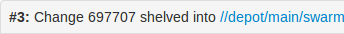

Swarm manages one or more changelists containing shelved copies of all of the files belonging to a specific review. You can unshelve the files to receive a copy of the review's code, or you can click the Download .zip to download a ZIP archive containing all of the review's files.
The current review version's changelist appears in the file list heading.

In this example, the changelist is 697707. You use the identified changelist in place of shelved changelist below.
Swarm can version file updates in reviews. For more information, see Review display.
For a shelved changelist, use a command-line shell and type:
$ p4 unshelve -s shelved changelist
For a committed changelist, use a command-line shell and type:
$ p4 sync @committed changelist
Your client's view mappings need to include the changelist's path.
For a shelved changelist:
For a committed changelist:
Git Fusion-initiated reviews include the Git logo beside the main review identifier. This indicator is important because Perforce users cannot update Git Fusion-initiated reviews.
In the following example, the current local task branch is task1, the target branch is master, the review id is 773273, the Git Fusion hostname is gfserver, and the remote repo name is p4gf_repo.
Fetch the review's head version:
$ git fetch --prune origin From gfserver:p4gf_repo * [new_branch] review/master/773273 -> origin/review/master/773273 x [deleted] (none) -> origin/review/dev/new
The --prune option lets the local Git repo delete the unwanted review/master/new reference created by the initial git push origin task1:review/master/new command.
Check out the review's head version:
$ git checkout review/master/773273
You can only update Git Fusion-initiated reviews using Git Fusion.
For more information on Git Fusion, see the Git Fusion Guide.
When the zip command-line tool is available, Swarm can provide a ZIP archive containing all of the files in a review. The version of the files downloaded matches those displayed when using the Review timeline.
The Download .zip button does not appear if the zip command-line tool is not available.
When you click the Download .zip button, Swarm performs the following steps:
You might not see all of the above steps; Swarm caches the resulting ZIP archives so that repeated requests to download the same review files can skip the sync/compress steps whenever possible.
If an error occurs while scanning, syncing, or compressing, Swarm indicates the error.
For information on the configuration for ZIP archives, see Archives configuration.
      |

|